$$qf_commondoc_header.start$$ $$qf_commondoc_header.end$$
$$note:This tutorial serves two purposes: It explains how to simulate an imaging FCS measurement with the imaging FCS simulator that is part of the plugin and it explains how to perform model selection for imaging FCS data.$$
$$startbox_see$$
A detailed introduction to least-squares fitting and the fit statistics used for model selection, as well as Bayesian model selection can be found in  A general Introduction to different methods of datafitting. Also see the help page on fit statistics.
$$endbox$$
$$warning:A note of caution: The process described in this tutorial is statistically sound, but relies stringly on the data quality and the quality of the error estimates on the correlation curves. Therefore you should consider this method for very high-quality data only and put considerable effort into any measurement!$$
$$warning:This tutorial is still work in progress and the examples might change in future versions!$$
A general Introduction to different methods of datafitting. Also see the help page on fit statistics.
$$endbox$$
$$warning:A note of caution: The process described in this tutorial is statistically sound, but relies stringly on the data quality and the quality of the error estimates on the correlation curves. Therefore you should consider this method for very high-quality data only and put considerable effort into any measurement!$$
$$warning:This tutorial is still work in progress and the examples might change in future versions!$$
Introduction
Often in an FCS evaluation, you are faced with the question: Which model should I choose and which one describes my data best? To solve this question, one generally uses two principles:
- Take the model that best describes you data (i.e. that has the smallest deviation from the measured curve, or smalles $(\chi^2)$ fit statistics)
- Take the best fitting model which has the lowest number of fit parameters, i.e. the "principle of parsimony"
Several automated methods for this model seelction scheme have been proposed over the years.
- See Refs. $$ref:LEVIN2004:Levin M K, Carson J H (2004) Fluorescence correlation spectroscopy and quantitative cell biology. Differentiation 72: 1-10 doi: 10.1111/j.1432-0436.2004.07201002.x$$$$ref:BURNHA2002:Burnham K P, Anderson D R (2002) Model Selection and Multimodel Inference ed. New York, London, Berlin: Springer$$ for an introduction to model selection. The "simple" method in these references is based on statistical information criteria, such as the Akaike information criterion (AIC)$$ref:AKAIKE1974:Akaike H (1974) A new look at the statistical model identification. IEEE Transactions on Automatic Control 19: 716-723$$$$ref:BURNHA2002:$$ or the Bayes information criterion (BIC)$$ref:SCHWARZ1978:Schwarz G (1978) Estimating the Dimension of a Model. The Annals of Statistics 6: 461-464$$$$ref:BURNHA2002:$$. The information criteria (BIC or AICc) are just a number which is calculated from the fits and which encodes both, the goodnes of fit and also the number of parameters that were required to achieve it. Then you simply choose the model with the lowest values (for BIC and AICc) of the criterion.
- Recently, also a very sofisticated framework based on Bayesian statistics has been proposed,$$ref:HE2012:He J, Guo S, Bathe M (2012) Bayesian Approach to the Analysis of Fluorescence Correlation Spectroscopy Data I: Theory. Analytical Chemistry 84: 3871-3879 doi: 10.1021/ac2034369$$$$ref:GUO2012:Guo S, He J, Monnier N, Sun G, Wohland T, Bathe M (2012) Bayesian Approach to the Analysis of Fluorescence Correlation Spectroscopy Data II: Application to Simulated and In Vitro Data. Analytical Chemistry 84: 3880-3888 doi: 10.1021/ac2034375 $$. In Bayesian model selection,
This tutorial will cover the simple AIC/BIC-based method, as well as Bayesian model selection. It will show you how this works on a synthetic dataset that we will simulate with the imaging FCS simulator that is part of the imaging_fcs Plugin in QuickFit $$version$$. Finally we will end up with a graph, that shows you where which model should be taken.
Tutorial
Simulation of a Sythetic Dataset
First we will generate two synthetic imaging FCS dataset, which will contain two regions with different types of mobilities:
- A dataset, where fast molecules diffuse in the whole simulational box and a second type of slow particles freely diffuses, but limited to a certain range of the simulational box.
- A dataset, where again some molecules diffuse freely through the whole simulational box and their motion is modulated by a laminar flow in half of the box.
Then we will use different model selection methods to evaluate the dataset and reconstruct the two regions.
Simulating 1-component/2-component normal diffusion
- Start the imaging FCS simulator by clicking the mainwindow menu entry
 Data items|Insert raw Data | imFCS: Imaging FCS| simulate images for correlation. A window will open, which allows to set the simulation parameters.
Data items|Insert raw Data | imFCS: Imaging FCS| simulate images for correlation. A window will open, which allows to set the simulation parameters.
- Set all options as shown in the following screenshot:
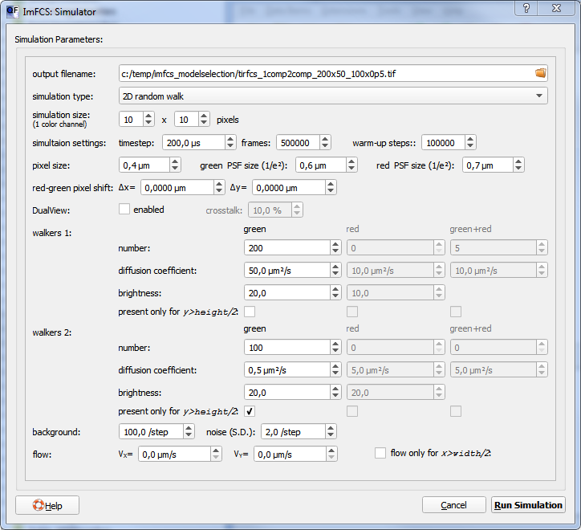
The settings mean:
-
This will generate a simulational box of 10x10 pixels, at a pixel size of 400nm. The PSF of the particles will be 600nm wide (1/e2-halfwidth).
- In this box, simulations will be done with a timestep of 200µs and 500,000 vrames will be simulated.
- The simulation will be warmed up for 100,000 steps during which the particles move, but no output image series is created. This ensures that the simulation is in equilibrium, when data is generated.
- In this box two types of particles are diffusion. Fast particles (particle count: 200) with a diffusion coefficient of 50µm²/s and a brightness of 20 counts/step are diffusing freely everywhere.
- A second species (count: 100 particles) diffuses only in the upper half (y>height/2) of the simulational box with a diffusion coefficient of 0.5µm²/s.
- Finally the simulation will add a background signal to the output which are random numbers drawn from a normal distribution with mean 100/step and width 2/step.
- The data will be stored in the TIFF format in a file c:/temp/imfcs_modelselection/tirfcs_1comp2comp_200x50_100x0p5.tif. You should change this, so the file is generated in an appropriate place on your computer. Note, the directory in which to place the output data has to exist on your harddisk!
- Now click on Start Simulation. and wait until the simulation completes (this may take several minutes!). A progress bar at the bottom of the window will inform you on the progress of the simulation and when it is finished, the correlation dialog will open up with the simulation result pre-selected.
- In the correlation dialog you should set the following settings:
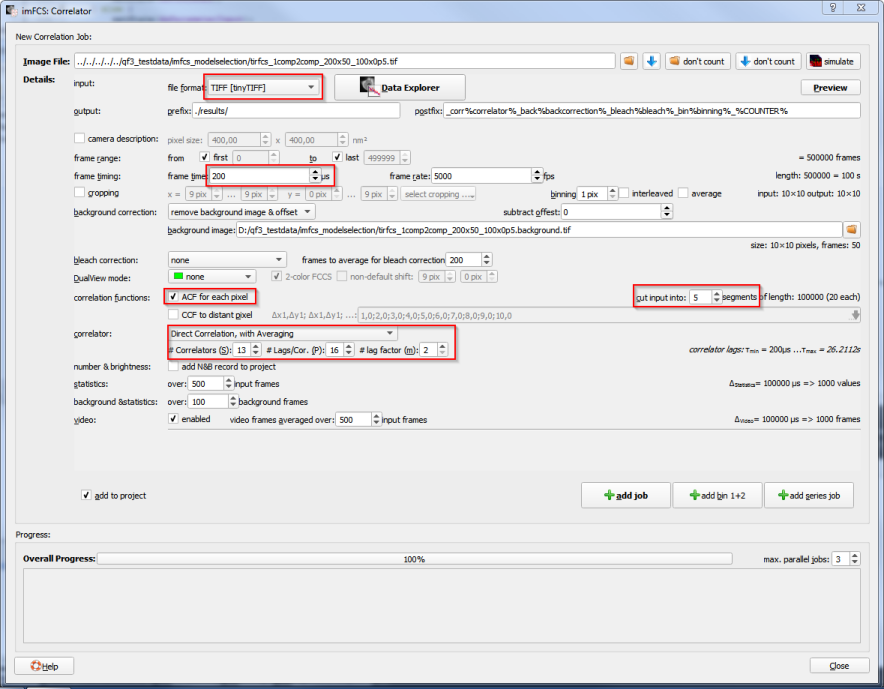
Ensure that the following settings are set:
- The file format should be "tinyTIFF", as otherwise the correlator cannot rea files with more than 65,000 frames (which we have).
- The frametime should be preset to 200µs (as set in the simulation!). If not, change the setting.
- The correct background-file should be selected.
- we don't need a bleach-correction, so set this to "none" and ans the DualView mode to "none".
- Select only ACFs under "correlation functions", since we don't need to calculate cross-correlation functions for this tutorial.
- Select "cut into 5 segments". This causes the correlator to cut the measurement into 5 segments and finally return the average over these five segments as ACF in each pixel. The standard deviation is used as an estimate for the errors on the correlation curve. Note especially for Bayesian model selection, it is essential to have a good estimate of the errors on the correlation curve, as otherwise the selection process cannot be performed with good results $$ref:HE2012:$$.
- as correlator, choose "Direct Correlation, with Averaging", set P=16, m=2 and choose S so the maximum lag time (displayed at the right of the correlator options) is slightly larger than the segment length.
- Finally click on add job to start the correlation process. A task will be added to the area at the bottom of the window and display the progress of the correlation (note, QuickFit might need several minutes to fully process your data).
- When the correlation is finished (a green check-mark is shown next to the progress), you can close the dialog and the correlated data will be loaded into the project.
Inspect the results
After generating and correlating the datasets in the last setps, the project will look roughly like this:
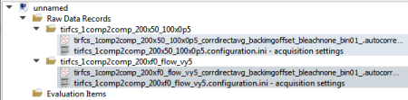
Now we can inspect the data:
- Double-click on the first imFCS RDR (
 ) in the project. An RDR editor will open in which you should select the Tab "Parameter Image":
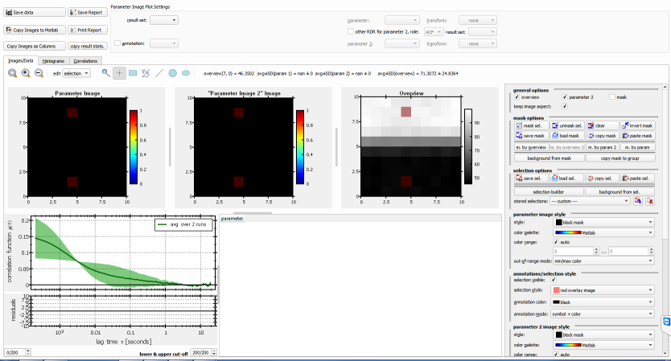
In the overview image you see two regions: A bright upper halve, where the fast and the slow particles are present and a dim lower halve, where only the slow particles are.
) in the project. An RDR editor will open in which you should select the Tab "Parameter Image":
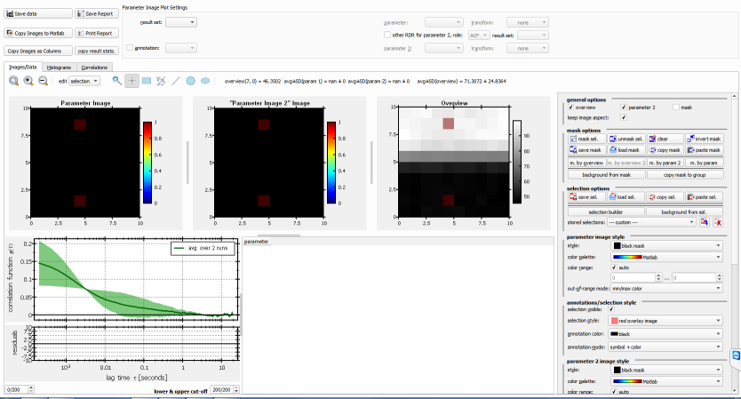
In the overview image you see two regions: A bright upper halve, where the fast and the slow particles are present and a dim lower halve, where only the slow particles are.
- Select the tool
 above the images and click on one pixel in the upper and one pixel in the lower halve, while keeping CTRL kressed.
above the images and click on one pixel in the upper and one pixel in the lower halve, while keeping CTRL kressed.
- In the options on the right-hand side, scroll down until you find these settings:
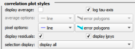
and choose "selection display: display all".
- Now the correlation plot on the bottom left will show two correlation curves: A fast decaying curve (here red) from the lower part and a slow decaying curve (green) from the two-component region:
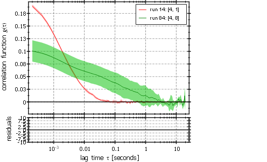
Here you can clearly distinguish the two different regimes with one or two components.
- When you are done, close the RDR editor.
Fitting the Dataset with Different Models
Now we will have to fit the data with the different models from which we want to select. We'll choose four models:
To perform the fits, follow these steps for every of the above-mentioned four models:
- In the main window: Add a new fit evaluation object to the project by clicking Data Items | Insert Evaluation | imFCS Curve Fitting. A new evaluation object will appear at the end of the project tree.
- Double-click the new evaluation and choose the Tab "Properties". Change the name to a short description of the model, e.g.:
- 1-comp. normal Diff.
- 2-comp. normal Diff.
- Change back to the Tab "Evaluation" (Sometimes the widgets do not appear, then close and reopen the window and the problem is solved! This bug will be fixed in a future version.):
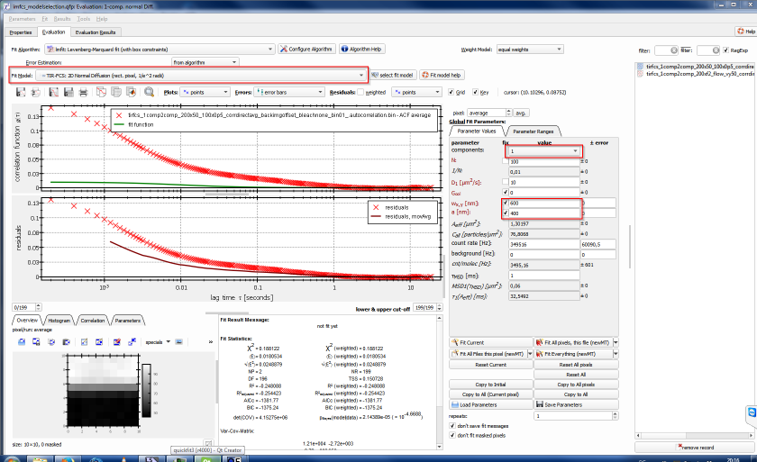
Make sure to select the correct fit model (you can also press select fit model and search for the model). Then set the PSF-size $(w_{xy}=600\mathrm{nm})$ and the pixel size $(a=400\mathrm{nm})$ in the fit parameters on the right. Also make sure to select the correct number of components (at the top of the fit parameter list).
- Often the fit will not converge and may push one or the other parameter to unphysical values. This can be prevented by setting the fit parameter ranges. To do so, select the Tab "Parameter Ranges" above the fit parameters list on the right. There you should set the following ranges (depending on which are applicable for the current model):
- $(0.1\leq D_1\leq 200)$
- $(0.1\leq D_2\leq 200)$
- Select the weight model: per run error and set the number of repeats to 3. The first will ensure that QuickFit uses the standard deviations over the five segments for weighting the fits and the latter will repeat each fit 3 times automatically, which improves convergence.
- Initially the "Average" pixel is selected, which is a correlation function, averaged over all pixels. This is also a good starting point for a fit, so click on "Fit Current" and observe how the fit improves. You may have to click several times until you get a good fit result for the average. If the fit does not converge, try to play around a little bit with the fit parameters, before clicking again. The currently displayed parameters are used as starting values for the next fit.
- When you are happy with your fit (see the examples below), click on "Copy to Initial". Now the current fit results are used as initial values for all further fits in this evaluation object.
- Now click on Fit all Pixels, this file, which will repeat the fit for all pixels in the currently selected file.
- Now select the second RDR/file from the list on the right and repeat the fit, as described above for this file.
- Finally close the fit dialog and repeat these steps for every fit model.
$$note:A shortcut exists for adding the 2nd (and more) fit evaluations: In the project-tree right-click an existing evaluation and click on Duplicate Item. Then the evaluation with all its settings, but without the results will be duplicated and you can simply open it and only change the fit model and/or number of components and should be fine to proceed to the rest of the evaluation.$$
Model Selection with AIC/BIC
Now we completed all fits and can inspect the results and do the model selection. First we will use the Akaike's information criterion (AIC) $[ \mbox{AICc}\ =\ K\cdot \ln\left[\frac{\mbox{RSS}}{K}\right]+2\cdot \mbox{NP}+\frac{2\cdot \mbox{NP}\cdot (\mbox{NP}+1)}{K-\mbox{NP}-1} ]$ or the
Bayesian information criterion (BIC) $[ \mbox{BIC}\ =\ K\cdot \ln\left[\frac{\mbox{RSS}}{K}\right]+\mbox{NP}\cdot\ln\left[K\right]. ]$ In both criteria, $(\mbox{RSS}=\chi^2)$ is the residual sum of squares, $(NP)$ is the number of fit parameters and $(K)$ is the number of datapoints in the autocorrelation curve. In the next section we will calculate the more complex Bayesian model properties. Now for the simple selection process:
- Double-click the first RDR in the project and choose the Tab "Parameter Image". Here you can now inspect the fit results as parameter images. You can choose the evaluation from which to display teh results as result set and two parameters from this fit for the two parameter images. Inthe following screenshot you see the fraction of the second component and the particle number, both from the 2-component normal diffusion fit:
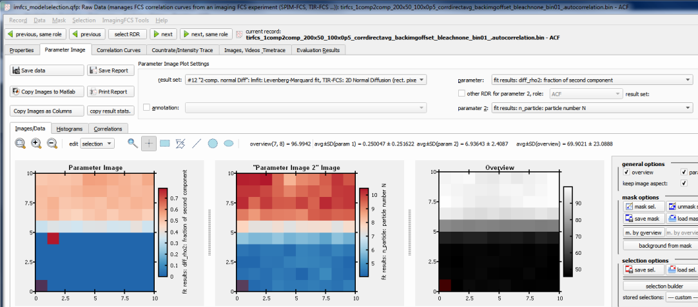
You can see that for this "ideal" model (it describes the physical situation that we actually have!) you can clearly distiguish the two regions, but now we want to use a statistical method to really choose the best model!
- For the model selection, click on the menu entry ImagingFCS Tools | annotate model comparison. A new dialog will open up, which looks as follows:
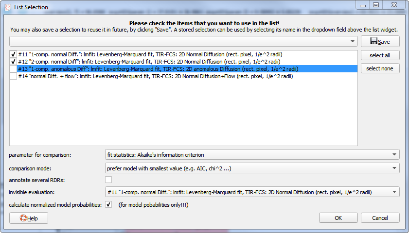
-
-
- Finally choose one of the available evaluations as "invisible evaluation" (here you should choose the 1-component fit). The idea is as follows: QuickFit will create an overlay over the overview plot with differently colored symbols that tell you which model should be used where. For one of the model (usually one, prefered by the user), no symbol is displayed.
- Click on "OK".
- Now QuickFit will perform the model comparison and add an annotation, which you can activate at the top of the window (check the annotation checkbox and choose the appropriate annottaion from the list):
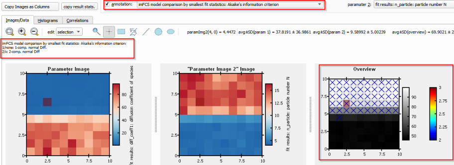
As you can see in the screenshot, QuickFit now added an overlay/annotation with symbols to the overview plot and you can see the regions, where the 2-component model is prefered.
Bayesian Model Selection
Model selection, based on Bayesian model probabilities is done the same way as model selection with AIC/BIC (see last section). But:
- In the "annotate model selection" dialog you should now choose the parameter Bayes model probability and the comparison mode "prefer model with largest value", as we want to prefer the model with the largest probability.
- As described in the help pages/PDF referenced at the top, the Bayes model probabilities calculated by QuickFit are not yet normalized. The model selection dialog can perform this normalization, if you check "calculate model probabilities".
- After a click on "OK", QuickFit adds a new annotation for the Bayesian model probabilities. In addition you can now select a fit parameter, which contains the normalized model probability of each model (the prob. for each model is in the result set of that model!):
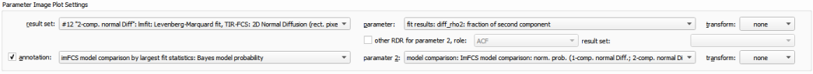
Reference
$$references$$